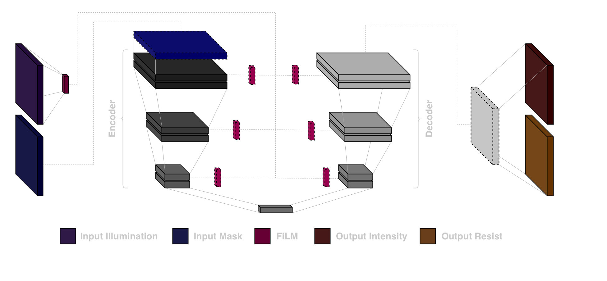
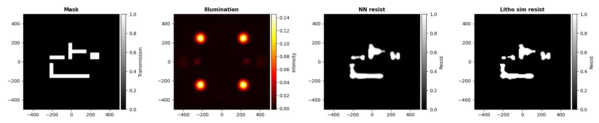

Surrogate Neural Network
We can train a neural network to approximate the simulator by generating mask and
illumination pairs and using the Fourier optics model to compute the ground truth wafer
intensity and resist profile for each one. Convolutional layers are particularly well
suited for this task because the mask is inherently spatial, and the behaviour at each
pixel depends strongly on its local neighbourhood.
The illumination is handled differently. Unlike the mask, the illumination source is a
global property of the optical system, affecting how every part of the mask gets
resolved on the wafer equally. Feeding it in as just another input channel and
processing it with convolutions would not reflect this. Instead, we use Feature-wise
Linear Modulation (FiLM): the illumination is encoded into a compact vector, which is
then used to dynamically scale and shift the feature maps at each level of the network.
This is similar to a standard layer in a neural network, but rather than having fixed
learned parameters, the scale and shift values are determined dynamically from the
illumination input. This allows the network to adapt its feature extraction to different
illumination conditions without changing the spatial structure of the mask features.
The architecture used is a UNet, as shown below, a natural choice for image-to-image
prediction tasks.
The network consists of two main parts: an encoder and a decoder. The encoder processes
the input mask through a sequence of convolutional layers and downsampling operations.
At each stage it extracts increasingly abstract spatial features while reducing the
resolution of the representation, allowing the network to capture larger spatial context
and global structure in the mask pattern.

At the centre of the network is a bottleneck representation that contains a compact
summary of the mask features. From this compressed representation, the decoder gradually
reconstructs a high-resolution output by applying upsampling layers followed by
convolutional blocks. At each stage the spatial resolution increases while the
representation becomes more detailed again.
Skip connections link each encoder layer to the corresponding decoder layer. These
connections pass high-resolution feature maps directly to later stages of the network,
providing a shortcut for fine spatial detail that would otherwise be lost during
downsampling. This helps the model preserve edge information and local structure in the
predicted wafer intensity and resist profile.
Using this UNet-FiLM, the network predicts wafer intensity and resist profiles that
preserve mask details while adapting to illumination. An example output, which compares it to the ground truth simulation, is shown below.

Once trained, gradients can flow through the surrogate neural network, meaning we can
use it to work
backwards from a desired resist profile to find the mask and illumination that produce
it.